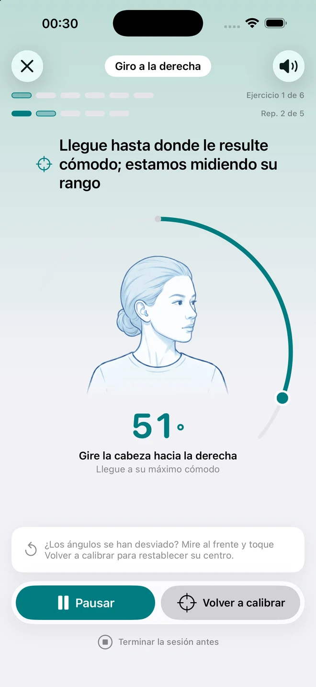
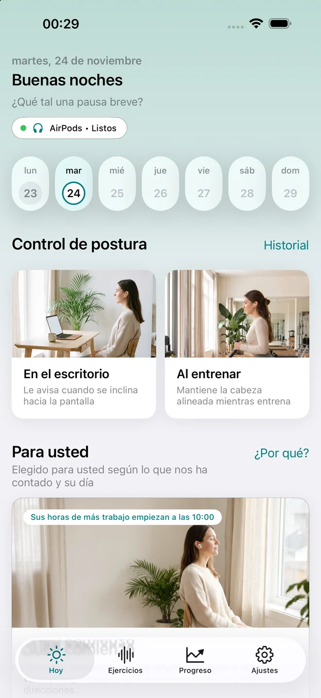
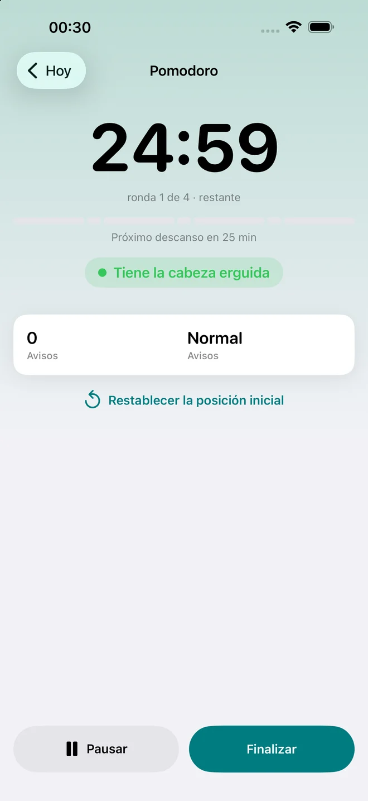

Cuello
Giro de cabeza, inclinación lateral, mirar hacia abajo y hacia arriba, retracción de barbilla. Los AirPods miden el ángulo y cuentan las repeticiones; sin ellos, Nodly marca el ritmo por tiempo.
Ejercicios breves para el cuello, la respiración, los ojos, las manos y las piernas, y yoga de escritorio. Con sus AirPods, Nodly mide los movimientos de su cuello, cuida su postura y le avisa cuando mantiene la cabeza baja demasiado tiempo.
Descargar en el App StorePara iPhone y iPad · Con AirPods compatibles o sin ellos

No solo el cuello
Giro de cabeza, inclinación lateral, mirar hacia abajo y hacia arriba, retracción de barbilla. Los AirPods miden el ángulo y cuentan las repeticiones; sin ellos, Nodly marca el ritmo por tiempo.

Espiración larga, respiración cuadrada y respiración equilibrada durante 1, 2 o 3 minutos, guiadas por un dibujo y una vibración suave.

Una pausa de dos minutos lejos de la pantalla: mire a lo lejos, parpadee despacio y descanse con los ojos cerrados.

Estiramientos y círculos de muñeca, y abrir y cerrar el puño, para los días de teclado y ratón.

Elevación de talones y de puntas, extensión de rodilla y marcha sentado, sin levantarse de la silla.

Gato-vaca, flexión lateral y torsión sentado, y ejercicios de hombros para soltarse entre reuniones.
Solo la medición del cuello usa AirPods. Todo lo demás funciona sin ellos.
Medido con sus AirPods
Los sensores de movimiento de sus AirPods siguen el ángulo de su cabeza. Cuando llega al rango objetivo, Nodly le avisa con un sonido y una vibración y cuenta la repetición por usted. Los objetivos se adaptan a su propio rango de movimiento.
Nodly usa los sensores de movimiento de sus AirPods. Sin cámara ni dispositivos adicionales.
Mire al frente y quédese quieto unos segundos. Nodly toma esta postura como 0°.
Cuando llega al rango objetivo, Nodly le avisa con un sonido y una vibración y cuenta la repetición por usted.
0°
Derecha
Arrastre hacia la derecha hasta la zona verde y luego vuelva al centro.
Repeticiones: 0


Control de postura
Sigue su cabeza mientras trabaja, de 30 minutos a 2 horas, o en rondas Pomodoro de 25 minutos de trabajo y 5 de descanso.
En los ejercicios de pie, le avisa en segundos si baja la cabeza. Para los ejercicios tumbado, basta con ponerlo en pausa.
Bloquee el iPhone y siga trabajando. El tiempo restante aparece en la pantalla de bloqueo, y desde ahí puede pausarlo o finalizarlo.
Con Siri, desde el centro de control o con una automatización de concentración en Atajos.
“Iniciar Control de postura en Nodly”
Rutinas
Empiece con una rutina lista, como Buen comienzo o Pausa de pantalla, o elija ejercicios de la biblioteca y póngalos en su propio orden. Para usted, en la pantalla Hoy, le sugiere una rutina que encaja con su día y sus horas de más trabajo.
Progreso
Su racha, su semana y cómo reparte su tiempo entre cuello, respiración, ojos, manos y piernas, de un vistazo. Y a medida que practica, un pequeño escritorio en 3D se va ordenando solo.
Los detalles
Su historial y sus rutinas se sincronizan entre su iPhone y su iPad a través de su propio iCloud.
Los ejercicios de cuello pueden hacerse por tiempo. Los demás ejercicios nunca necesitan AirPods.
Un recordatorio diario, pausas de escritorio en sus horas de más trabajo y un resumen semanal, todos opcionales.
La guía por voz, los sonidos y la vibración le acompañan para que sus ojos puedan descansar de la pantalla.
Tamaños de texto grandes, VoiceOver y Reducir movimiento, en iPhone y iPad.
Español, inglés, turco, alemán, francés y japonés.
Privacidad y confianza
Los datos de movimiento se tratan en su iPhone y nunca se guardan datos brutos. No necesita cuenta.
Los movimientos deben ser lentos y cómodos. Si algo no le sienta bien, pare de inmediato. Nodly nunca le fuerza.
Nodly es una app de bienestar; no diagnostica ni trata ninguna enfermedad. Si tiene alguna afección en el cuello, consulte a un profesional sanitario antes de empezar.
Información legal
Sin cuenta, y sus datos de movimiento no salen de su dispositivo. Solo recogemos estadísticas de uso anónimas si nos da permiso. Sin anuncios, sin seguimiento y sin venta de datos.
Leer el texto completoNodly se ofrece con suscripción mensual o anual, y los usuarios que reúnan los requisitos tienen 7 días de prueba gratis. Puede cancelar cuando quiera en los ajustes de su cuenta del App Store.
Leer el texto completoMuévase despacio y solo dentro de un rango cómodo. Pare de inmediato si siente dolor, mareo o entumecimiento.
Leer el texto completo